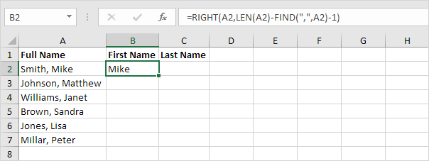
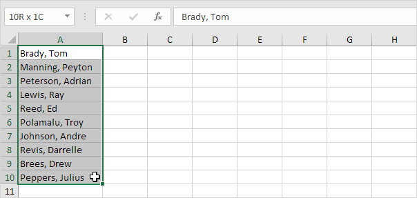
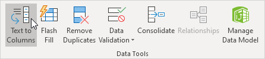
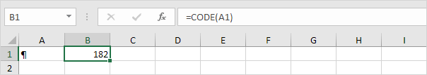
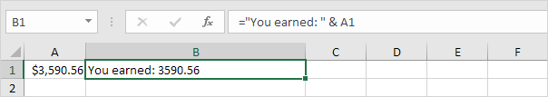
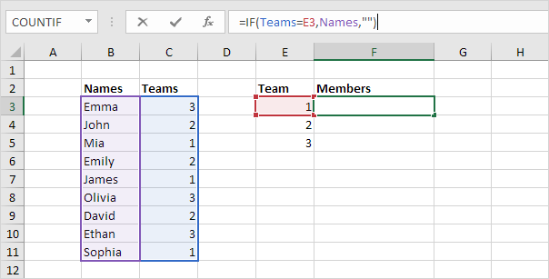
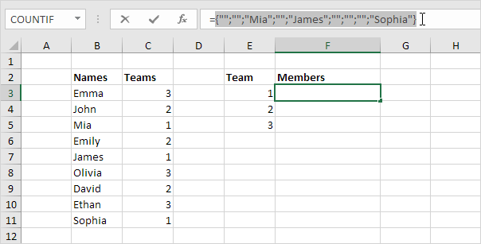
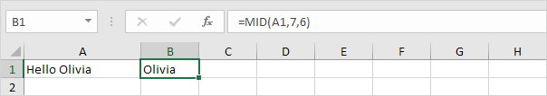

Contoh Penggunaan Fungsi Teks
String Terpisah |
Hitung Kata |
Teks ke Kolom |
Temukan |
Pencarian |
Mengubah Huruf |
Hapus Spasi |
Bandingkan Teks |
Substitute vs Replace |
Text |
Concatenate |
Substring
unduh file latihan
String Terpisah (Separate Strings)
Contoh ini mengajarkan Anda cara memisahkan string di Excel.
Masalah yang kita hadapi adalah kita perlu memberi tahu Excel di mana kita ingin memisahkan string. Dalam kasus Smith, Mike koma di posisi 6 sedangkan dalam kasus Williams, Janet koma di posisi 9.
1. Untuk mendapatkan nama depan, gunakan rumus di bawah ini.

Penjelasan: untuk mencari posisi koma, gunakan fungsi FIND (posisi 6). Untuk mendapatkan panjang string, gunakan fungsi LEN (11 karakter). =RIGHT(A2,LEN(A2)-FIND(",",A2)-1) dikurangi menjadi =RIGHT(A2,11-6-1).
=RIGHT(A2,4) mengekstrak 4 karakter paling kanan dan memberikan hasil yang diinginkan (Mike).
2. Untuk mendapatkan nama belakang, gunakan rumus berikut.

Penjelasan: untuk mencari posisi koma, gunakan fungsi FIND (posisi 6). =LEFT(A2,FIND(",", A2)-1) dikurangi menjadi =LEFT(A2,6-1). =LEFT(A2,5) mengekstrak 5 karakter paling kiri dan memberikan hasil yang diinginkan
(Smith).
3. Pilih rentang B2:C2 dan seret ke bawah.

unduh file latihan
Hitung Kata (Count Words)
Pertama, mari kita hitung jumlah total kata dalam sel atau rentang sel. Terakhir, mari kita hitung berapa kali kata tertentu muncul dalam sel atau rentang sel.
1. Fungsi TRIM di bawah ini mengembalikan string dengan spasi biasa saja.
2. Untuk mendapatkan panjang string ini, tambahkan fungsi LEN.

3. Fungsi SUBSTITUTE di bawah ini mengembalikan string tanpa spasi.

4. Untuk mendapatkan panjang string ini, tambahkan fungsi LEN.
5. Untuk menghitung jumlah total kata di sel A1, kurangi panjang string tanpa spasi (rumus dari langkah 4) dari panjang string dengan hanya spasi biasa (rumus dari langkah 2) dan tambahkan 1.
Kesimpulan: untuk menghitung jumlah total kata dalam sel, cukup hitung jumlah spasi dan tambahkan 1 ke hasil ini. 1 spasi berarti 2 kata, 2 spasi berarti 3 kata, dst.
6. Untuk menghitung jumlah total kata dalam rentang A1:A2, tambahkan fungsi SUMPRODUCT dan ganti A1 dengan A1:A2.
Catatan: kunjungi halaman kami tentang fungsi SUMPRODUCT untuk mempelajari lebih lanjut tentang fungsi Excel ini.
Terakhir, mari kita hitung berapa kali kata tertentu muncul dalam sel atau rentang sel. Trik ini cukup keren.
7. Fungsi LEN di bawah ini mengembalikan panjang teks asli di sel A1.

8. Fungsi SUBSTITUTE di bawah ini mengembalikan string tanpa kata "anjing".
9. Fungsi LEN di bawah ini mengembalikan panjang string ini.
10. Kurangi panjang string tanpa kata "anjing" (rumus dari langkah 9) dari panjang teks asli di sel A1 (rumus dari langkah 7).

Kesimpulan: setelah menghapus kata "anjing" dari teks aslinya, 12 karakter hilang.
11. Kita tahu panjang kata "anjing" (3), jadi kata "anjing" muncul 12 / 3 = 4 kali di sel A1.

12. Untuk menghitung berapa kali kata "anjing" muncul pada rentang A1:A2, tambahkan fungsi SUMPRODUCT dan ganti A1 dengan A1:A2.

13. Gunakan fungsi COUNTIF di Excel untuk menghitung jumlah sel yang berisi kata tertentu.

Catatan: tanda bintang (*) cocok dengan serangkaian karakter nol atau lebih. Kunjungi halaman kami tentang fungsi COUNTIF untuk mempelajari lebih lanjut tentang fungsi Excel yang hebat ini.
unduh file latihan
Teks ke Kolom (Text to Columns)
Untuk memisahkan konten satu sel Excel menjadi kolom terpisah, Anda dapat menggunakan 'Wisaya Konversi Teks ke Kolom'. Misalnya, ketika Anda ingin memisahkan daftar nama lengkap menjadi nama belakang dan nama depan.
1. Pilih rentang dengan nama lengkap.

2. Pada tab Data, dalam grup Alat Data, klik Teks ke Kolom.

Kotak dialog berikut muncul.
3. Pilih Dibatasi dan klik Berikutnya.

4. Kosongkan semua kotak centang di bawah Pembatas kecuali untuk kotak centang Koma dan Spasi.
5. Klik Selesai.

Catatan: Contoh ini memiliki koma dan spasi sebagai pembatas. Anda mungkin memiliki pembatas lain dalam data Anda. Bereksperimenlah dengan mencentang dan menghapus centang pada kotak centang yang berbeda. Anda mendapatkan
pratinjau langsung tentang bagaimana data Anda akan dipisahkan.
Hasil:

Gunakan fungsi FIND di Excel untuk menemukan posisi substring dalam string. Fungsi FIND peka huruf besar/kecil.
1. Fungsi FIND di bawah ini menemukan string "ro" di posisi 4.

2. Fungsi FIND di bawah ini menemukan string "Excel" di posisi 11.
3. Fungsi FIND peka huruf besar/kecil. Fungsi FIND di bawah ini mengembalikan #VALUE! error karena tidak dapat menemukan string "excel".

Fungsi FIND memiliki argumen opsional ke-3. Anda dapat menggunakan argumen ini untuk menunjukkan posisi, menghitung dari kiri, di mana Anda ingin mulai mencari.
4. Fungsi FIND di bawah ini menemukan string "o" pada posisi 5.
5. Fungsi FIND di bawah ini mulai mencari di posisi 6 dan menemukan string "o" di posisi 7.
Catatan: fungsi
SEARCH di Excel tidak peka huruf besar-kecil dan mendukung wildcard.
unduh file latihan
Pencarian (Search)
Gunakan fungsi SEARCH di Excel untuk menemukan posisi substring dalam string. Fungsi SEARCH tidak peka huruf besar-kecil dan mendukung wildcard.
1. Fungsi SEARCH di bawah ini menemukan string "ro" di posisi 4.
2. Fungsi SEARCH tidak peka huruf besar/kecil. Fungsi SEARCH di bawah ini menemukan string "excel", "Excel", "EXCEL", "EXcel", dll.

Fungsi SEARCH mendukung karakter wildcard. Tanda tanya (?) cocok dengan tepat satu karakter. Tanda bintang (*) cocok dengan serangkaian karakter nol atau lebih.
3. Fungsi SEARCH di bawah ini menemukan string "2019", "2018", "2017", dll.

4. Fungsi SEARCH di bawah ini menemukan string "Microsoft Excel 2019", "Microsoft Word 2019", "Microsoft Access 2019", dll.

Fungsi SEARCH memiliki argumen opsional ke-3. Anda dapat menggunakan argumen ini untuk menunjukkan posisi, menghitung dari kiri, di mana Anda ingin mulai mencari.
5. Fungsi SEARCH di bawah ini menemukan string "o" pada posisi 5.

6. Fungsi SEARCH di bawah ini mulai mencari di posisi 6 dan menemukan string "o" di posisi 7.

unduh file latihan
Mengubah Huruf (Change Case)
Untuk mengubah huruf besar/kecil teks di Excel, gunakan LOWER, UPPER atau PROPER. Jika Anda bukan pahlawan formula, gunakan Flash Fill untuk mengubah huruf besar/kecil di Excel.
1. Gunakan fungsi LOWER di Excel untuk mengubah huruf besar teks menjadi huruf kecil.
Catatan: klik dua kali sudut kanan bawah sel B1 untuk menyalin rumus ini dengan cepat ke sel lain.
2. Gunakan fungsi UPPER di Excel untuk mengubah huruf besar teks menjadi huruf besar.

3. Gunakan fungsi PROPER di Excel untuk mengubah huruf pertama setiap kata menjadi huruf besar dan semua huruf lainnya menjadi huruf kecil.

Jika Anda bukan pahlawan formula, gunakan Flash Fill untuk mengubah huruf besar/kecil teks di Excel. Dalam contoh di bawah ini, kami mencari campuran antara huruf besar dan huruf besar.
4. Pertama, beri tahu Excel apa yang ingin Anda lakukan dengan memasukkan kota yang benar (huruf besar) dan singkatan negara bagian (huruf besar) ke dalam sel B1.

5. Pada tab Data, di grup Data Tools, klik Flash Fill (atau tekan Ctrl+E).

Hasil:

Catatan: Flash Fill tidak sempurna dan terkadang membutuhkan sedikit bantuan. Kunjungi halaman kami tentang Isi Flash untuk mempelajari lebih lanjut tentang alat Excel yang hebat ini.
unduh file latihan
Hapus Spasi (Remove Spaces)
Fungsi TRIM di Excel menghilangkan spasi awal, spasi ekstra, dan spasi tambahan. Gunakan fungsi SUBSTITUTE untuk menghapus semua spasi atau spasi non-breaking.
1. Fungsi TRIM di bawah menghilangkan 2 spasi awal, 3 spasi tambahan, dan 2 spasi tambahan.

Catatan: fungsi TRIM tidak menghapus spasi tunggal di antara kata-kata.
2. Untuk mendapatkan panjang string, gunakan fungsi LEN.

Penjelasan: fungsi LEN menghitung 2 spasi, 2 karakter, 4 spasi, 3 karakter dan 2 spasi.
3. Anda dapat menggunakan fungsi SUBSTITUTE untuk menghapus semua spasi.

Catatan: fungsi SUBSTITUTE mengganti spasi (argumen kedua) dengan string kosong (argumen ketiga).
Teks yang diimpor dari aplikasi lain mungkin berisi karakter ASCII. Fungsi CLEAN menghapus 32 karakter ASCII pertama yang tidak dapat dicetak (kode 0 hingga 31).
4. Fungsi CLEAN di bawah ini menghapus karakter yang tidak dapat dicetak, CHAR(7).

5. Cukup gabungkan CLEAN dan TRIM untuk menghapus karakter dan spasi yang tidak dapat dicetak.

6. Fungsi CLEAN menghilangkan jeda baris. Untuk memasukkan jeda baris, tekan ALT + ENTER.

7. Anda juga dapat menggunakan fungsi SUBSTITUTE untuk menghapus jeda baris, CHAR(10), dan menggantinya dengan yang lain. Misalnya koma dan spasi.

Fungsi CLEAN tidak menghapus semua karakter ASCII. Cukup gunakan fungsi SUBSTITUTE untuk menghapus karakter ASCII lainnya.
8. Pertama, cari tahu nomor kode karakter.

9. Selanjutnya, gunakan SUBSTITUTE dan CHAR untuk mengembalikan string teks tanpa karakter ini.

10. Jika teks Anda berisi spasi non-breaking, CHAR(160), fungsi TRIM tidak bekerja.

11. Anda dapat menggunakan fungsi SUBSTITUTE untuk mengganti spasi tanpa putus, CHAR(160) dengan spasi normal, CHAR(32). Jangan lupa untuk menambahkan fungsi TRIM untuk menghilangkan spasi tambahan.

unduh file latihan
Bandingkan Teks (Compare Text)
Contoh ini menunjukkan dua cara untuk membandingkan string teks di Excel. Yang satu peka huruf besar-kecil dan yang satu peka huruf besar-kecil.
1. Gunakan fungsi EXACT (peka huruf besar-kecil).

Penjelasan: string "Frog" di sel A1 dan string "frog" di sel B1 tidak sama persis (huruf pertama dalam huruf besar dan huruf pertama dalam huruf kecil).
2. Gunakan rumus =A1=B1 (tidak peka huruf besar/kecil).
Penjelasan: rumus ini mengabaikan perbedaan huruf kecil dan huruf besar. Hasilnya, enam rumus pertama menghasilkan TRUE.
3. Tambahkan fungsi IF untuk mengganti TRUE dan FALSE dengan kata atau pesan. Rumus di bawah ini menggunakan fungsi EXACT (lihat langkah 1).

4. Apakah Anda ingin membandingkan dua kolom atau lebih dengan menyorot perbedaan di setiap baris? Kunjungi halaman kami tentang Perbedaan Baris.

unduh file latihan
Substitute vs Replace
Jika Anda mengetahui teks yang akan diganti, gunakan fungsi SUBSTITUTE di Excel. Jika Anda mengetahui posisi teks yang akan diganti, gunakan fungsi REPLACE.
1. Fungsi SUBSTITUTE di bawah ini menggantikan 2013 dengan 2016.

2. Argumen ke-4 (opsional) menentukan kemunculan mana yang ingin Anda ganti. Fungsi SUBSTITUTE di bawah ini hanya menggantikan kemunculan kedua.

3. Fungsi SUBSTITUTE di bawah ini menggantikan spasi dengan string kosong. Dengan kata lain, rumus ini menghilangkan semua spasi.
4. Fungsi REPLACE di bawah ini dimulai dari posisi 4 dan menggantikan 2 karakter dengan -P.

5. Fungsi REPLACE di bawah ini dimulai dari posisi 1 dan menggantikan 3 karakter dengan string kosong. Dengan kata lain, rumus ini menghilangkan 3 karakter pertama.

Anda juga dapat menggunakan fitur Temukan dan Ganti Excel untuk menemukan teks tertentu dengan cepat dan menggantinya dengan teks lain.
6. Misalnya, pilih rentang A1:A10.
7. Pada tab Beranda, di grup Pengeditan, klik Temukan & Pilih.

8. Klik Ganti.

9. Ketik teks yang ingin Anda temukan (TX) dan ganti dengan (CA).
10. Klik 'Ganti Semua'.
Hasil. Excel mengganti semua kemunculan TX dengan CA.
Saat menggabungkan teks dan angka, gunakan fungsi TEXT di Excel untuk memformat angka tersebut. Halaman ini berisi banyak contoh fungsi TEXT yang mudah diikuti.
1a. Misalnya, tanpa menggunakan fungsi TEXT, inilah hasilnya.

1b. Dengan fungsi TEKS.

Catatan: #,## digunakan untuk menambahkan koma ke angka besar. Selalu sertakan kode format (argumen kedua) dalam tanda kutip ganda.
2. Ini contoh lain. Terapkan format persentase.
Catatan: gunakan 0 untuk menampilkan nilai integer terdekat. Gunakan 0,0 untuk satu tempat desimal. Gunakan 0,00 untuk dua tempat desimal, dll.
3. Dan contoh lainnya. Memformat tanggal.

Catatan: gunakan less/more m's, d's dan y's untuk mengubah tampilan tanggal.
4. Misalnya, gunakan fungsi TEXT untuk hanya menampilkan hari dalam seminggu. Kali ini kita cukup menggunakan fungsi TEXT tanpa menambahkan teks.
5. Gunakan fungsi TEXT untuk menampilkan angka dalam notasi ilmiah.
6. Gunakan fungsi TEXT untuk menampilkan pecahan dan tambahkan fungsi TRIM untuk menghilangkan spasi di depan.
Cukup gunakan kotak dialog ' Format Sel ' untuk menemukan kode format yang tepat.
7a. Misalnya, masukkan waktu ke dalam sel A1 dan pilih sel A1.

7b. Klik kanan, lalu klik Format Sel (atau tekan Ctrl+1).
7c. Pilih kategori Kustom dan klik kode format. Selanjutnya, klik pada kotak Type, pilih kode format dan tekan Ctrl+C untuk menyalin kode ini.
Catatan: Excel memberi Anda pratinjau hidup tentang bagaimana waktu akan diformat (di bawah Contoh).
7d. Klik Batal.
7e. Tempel (Ctrl+V) kode format ke fungsi TEXT Anda. Jangan lupa untuk menyertakan kode format dalam tanda kutip ganda.
unduh file latihan
Menggabungkan (Concatenate)
Gunakan fungsi CONCATENATE di Excel untuk menggabungkan (menggabungkan) string. Alih-alih menggunakan CONCATENATE, cukup gunakan & operator.
1. Fungsi CONCATENATE di bawah ini menggabungkan string di sel A1 dan string di sel B1.

2. Gunakan operator & untuk menghasilkan hasil yang sama persis.

3. Fungsi CONCATENATE di bawah ini menggabungkan string di sel A1, string " dan " (mencakup teks dalam tanda kutip ganda) dan string di sel B1.
4. Gunakan operator & untuk menghasilkan hasil yang sama persis.

5. Fungsi CONCATENATE di bawah ini menggabungkan string di sel A1, spasi dan string di sel B1.

6. Gunakan operator & untuk menghasilkan hasil yang sama persis.

Fungsi CONCAT di Excel 2016 atau yang lebih baru menghasilkan hasil yang sama persis dengan fungsi CONCATENATE. Cukup ganti CONCATENATE dengan CONCAT dalam rumus yang ditunjukkan di atas.
7. Fungsi CONCAT juga dapat menggabungkan serangkaian string. Jika Anda tidak memerlukan pembatas (spasi, koma, tanda hubung, dll.) ini bisa berguna.
Fungsi TEXTJOIN di Excel 2016 atau yang lebih baru bergabung dengan rentang string menggunakan pembatas (argumen pertama).
8. Pertama, lihat semua spasi tambahan di kolom E di bawah ini saat Anda menyeret fungsi CONCATENATE di sel E2 ke bawah ke sel E11.

9. Keindahan fungsi TEXTJOIN adalah dapat mengabaikan sel kosong (jika argumen kedua disetel ke TRUE).

10. Saat menggunakan fungsi CONCATENATE, gunakan fungsi TEXT untuk memformat angka.
Catatan: gunakan 0 untuk menampilkan nilai integer terdekat. Gunakan 0,0 untuk satu tempat desimal. Gunakan 0,00 untuk dua tempat desimal, dll. Kunjungi halaman kami tentang fungsi TEXT untuk lebih banyak contoh.
11. Gunakan CHAR(10) untuk menyisipkan jeda baris.

Catatan: jangan lupa untuk mengaktifkan pembungkusan teks. Pada tab Beranda, di grup Perataan, klik Bungkus Teks.
12. Mari kita lihat satu lagi contoh keren yang menggunakan fungsi TEXTJOIN. Pertama, fungsi
IF di bawah ini menemukan semua anggota Tim 1.

Penjelasan: fungsi IF memeriksa setiap sel dalam rentang
bernama Teams. Jika sama dengan nilai di sel E3, ia mengembalikan nama dari rentang bernama Nama, selain itu ia mengembalikan string kosong (dua tanda kutip ganda tanpa apa pun di antaranya).
13. Fungsi IF mengembalikan konstanta array yang disimpan dalam memori Excel. Pilih rumus di bilah rumus dan tekan F9 untuk melihat konstanta array ini.

14. Tambahkan fungsi TEXTJOIN yang kuat untuk menggabungkan nama-nama ini. Gunakan koma dan spasi sebagai pembatas (argumen pertama) dan atur argumen kedua ke TRUE untuk mengabaikan string kosong. Selesaikan
rumus array dengan menekan Ctrl+Shift+Enter.
Catatan: Excel menambahkan kurung kurawal {}. Mia, James dan Sophia ada di Tim 1. Klik dua kali sudut kanan bawah sel F3 untuk menyalin rumus ini ke sel lain dengan cepat.
Mid |
Left |
Right |
Substring di antara tanda kurung |
Substring yang berisi teks tertentu |
Isi Flash
Tidak ada fungsi SUBSTRING di Excel. Gunakan MID, LEFT, RIGHT, FIND, LEN, SUBSTITUTE, REPT, TRIM dan MAX di Excel untuk mengekstrak substring.
Mid
Untuk mengekstrak substring, dimulai di tengah string, gunakan fungsi MID di Excel.

Penjelasan: fungsi MID dimulai pada posisi 7 (O) dan mengekstrak 6 karakter.
Left
Untuk mengekstrak karakter paling kiri dari string, gunakan fungsi KIRI di Excel.

Untuk mengekstrak substring (dengan panjang berapa pun) sebelum tanda hubung, tambahkan fungsi FIND.

Penjelasan: fungsi FIND menemukan posisi tanda hubung. Kurangi 1 dari hasil ini untuk mengekstrak jumlah karakter paling kiri yang benar. Rumus yang ditunjukkan di atas direduksi menjadi KIRI(A1,4-1).
Right
Untuk mengekstrak karakter paling kanan dari string, gunakan fungsi KANAN di Excel.

Untuk mengekstrak substring (dengan panjang berapa pun) setelah tanda hubung, tambahkan LEN dan FIND.

Penjelasan: fungsi LEN mengembalikan panjang string. Fungsi FIND menemukan posisi tanda hubung. Kurangi nilai-nilai ini untuk mengekstrak jumlah karakter paling kanan yang benar. Rumus yang ditunjukkan di atas direduksi
menjadi KANAN(A1,6-4).
Substring di antara tanda kurung
Untuk mengekstrak substring di antara tanda kurung (atau kurung kurawal, kurung, garis miring, dll.), gunakan MID dan FIND di Excel.
1. Rumus di bawah ini hampir sempurna.

Penjelasan: fungsi FIND menemukan posisi kurung buka. Tambahkan 1 untuk menemukan posisi awal substring. Rumus yang ditunjukkan di atas direduksi menjadi MID(A1,6+1,2). Fungsi MID ini selalu mengekstrak 2 karakter.
2. Ganti 2 (argumen ketiga) dengan rumus yang mengembalikan panjang substring.
Penjelasan: kurangi posisi kurung buka dan nilai 1 dari posisi kurung tutup untuk menemukan panjang substring yang benar.
Substring yang berisi teks tertentu
Untuk mengekstrak substring yang berisi teks tertentu (misalnya, simbol @), gunakan SUBSTITUTE, REPT, MID, FIND, TRIM, dan MAX di Excel.
1. Pertama, gunakan SUBSTITUTE dan REPT untuk mengganti satu spasi dengan 100 spasi (atau angka besar lainnya).
2. Untuk fungsi MID di bawah ini dimulai 50 (1/2 * angka besar) posisi sebelum posisi simbol @ dan mengekstrak 100 (angka besar) karakter.

3. Gunakan fungsi TRIM untuk menghapus spasi awal dan akhir.

4. Gabungkan semuanya.
Catatan: pada langkah 2, fungsi MID dimulai 50 posisi sebelum posisi simbol @. Jika alamat email adalah kata pertama dalam kalimat (sel A3), ini menghasilkan posisi awal yang negatif. Dalam hal ini, fungsi MAX (lihat rumus
di atas) mengembalikan 1.
Isi Flash
Jika Anda bukan pahlawan formula, gunakan Flash Fill di Excel untuk mengekstrak substring secara otomatis.

Catatan: Excel tidak menyisipkan rumus, jika Anda mengubah string teks di kolom A, Excel tidak akan memperbarui angka di Kolom B.
kembali keatas
kembali keatas